Desertrescue (quest)
Scripts in
scripts/quests/quest_desertrescue/NPCs involved
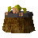
Anabarrel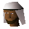
Bedabin Nomad Guard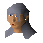
Irena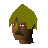
Mercenary CaptainItems involved
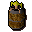
Ana in a barrel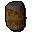
Barrel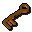
Bedobin key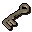
Metal key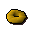
Pineapple ring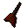
Prototype dart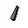
Prototype dart tip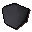
Rock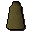
Slave robe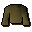
Slaves' shirt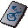
Technical plans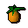
Tenti pineapple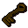
Wrought iron keyInvolvement is derived from identifiers referenced by the quest scripts.